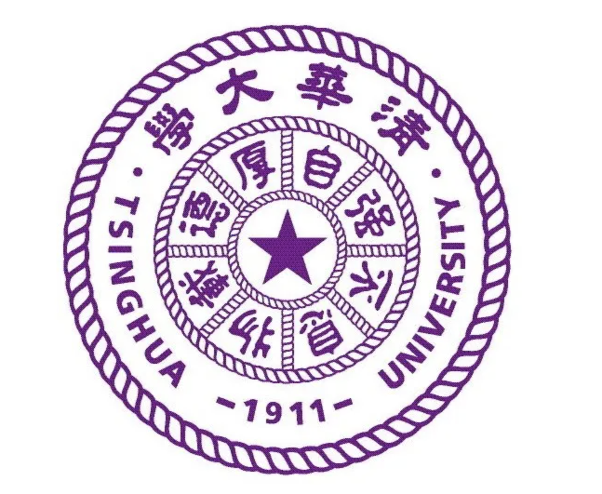

博士后,中共党员 |
2015年6月获四川大学电气信息学院（吴玉章学院）工学学士学位，2021年6月获清华大学电机工程与应用电子技术系博士学位，期间曾在哈佛大学工程与应用科学学院访问学习，辅修清华大学数据科学能力提升项目并结业。 现为清华大学五道口金融学院的博士后（与清华大学交叉信息研究院联合培养），主要研究方向为隐私计算和数据交易定价、金融科技和能源经济学等。参与多项数字经济、金融科技和智能电网、智能高铁大数据项目研究(包括由央行前副行长吴晓灵主持的数字身份认证和个人数据账户课题和北京交通大学经管学院信息管理系黄磊教授、清华大学建管系邓晓梅老师主持的数字经济类自然科学基金重点项目)，已发表SCI/EI论文14篇，参与撰写隐私计算方面行业标准1项，曾获得过国家奖学金、唐立新奖学金和清华数据科学研究院RONG奖学金特等奖。曾在嘉实基金、申万宏源证券等金融机构实习，通过了证券从业资格考试，目前也在备考CFA。
|  | 博士后 清华大学五道口金融学院和清华叉院 (2021.9 ~ 2023.9)
|
博士 清华大学 (2015.9 ~ 2021.6)
|
本科 四川大学 (2011.9 ~ 2015.6)
|
多方安全计算框架下的智能合约研究
凡航, 王倩雯，王云河
信息安全研究, 2021.
M2GSNet: Multi-Modal Multi-Task Graph Spatiotemporal Network for Ultra-Short-Term Wind Farm Cluster Power Prediction
Hang Fan, Xuemin Zhang, Shengwei Mei, et al.
Applied Sciences, 2020, 10(21): 7915. (SCI期刊，中科院3区，JCR Q2分区，CiteScore=3.7)
A Markov Regime-Switch Model for Ultra-Short-Term Wind Power Prediction based on Toeplitz Inverse Covariance Clustering
Hang Fan, Xuemin Zhang, Shengwei Mei, Junzi Zhang
Frontier in Energy Research. (SCI期刊, 中科院3区，JCR Q2分区，CiteScore =4.6)
Wind Power Time Series Missing Data Imputation Based on Generative Adversarial
Hang Fan, Xuemin Zhang, Shengwei Mei.
2021, IEEE 4th International Electrical and Energy Conference (CIEEC), Wuhan, China,2021:1-6.
基于时空神经网络的风电场超短期风速预测模型
凡航,张雪敏,梅生伟,杨忠良
电力系统自动化,2021,45(01):28-38.
Scale-and Context-Aware Convolutional Non-Intrusive Load Monitoring
Kunjin Chen, Yu Zhang, Qin Wang, Jun Hu, Hang Fan, et al.
IEEE Transactions on Power Systems, 2019, 35(3): 2362-2373. （SCI期刊，中科院1区，JCR Q1分区，CiteScore=22.5
Post-fault Transient Stability Assessment Based on k-Nearest Neighbor Algorithm with Mahalanobis Distance
Hang Fan, Ying Chen, et al.
POWERCON,2018.
Power system transient stability assessment based on dimension reduction and cost-sensitive ensemble learning
Hang Fan, Shaowei Huang, Ying Chen, et al.
IEEE Conference on Energy Internet and Energy System Integration (EI2) in 2017: 1-6.
Visualization of power system transient process based on manifold learning
Hang Fan, Shaowei Huang, Ying Chen, et al.
35th Chinese Control Conference (CCC) in 2016: 10119-10123.
基于概率区间预测的计及风电接纳的旋转备用区间预测方法
刘天琪，李茜 ，王福军 ，马静 ，吴星， 关铁英， 蔺海明， 凡航
国家发明专利, 公开号:ZL201410240410.3
一种双回并行高压直流输电系统谐波不稳定的判定方法技术方案
刘天琪，丁媛媛，李兴源，马静，陈实，王峰，李保宏， 凡航
国家发明专利, 公开号:ZL201410315798.9.
基于流形学习的电力系统动态仿真可视化方法
黄少伟，李春来，陈颖，张海宁，凡航，杨立滨，贾昆，李正曦
国家发明专利, 公开号:ZL201610542619.4
风电场功率预测方法、GBDT模型横向训练方法及装置
凡航，陈智隆，郝天一，陈琨，王国赛
国家发明专利, 公开号:CN114118638A
风电场功率预测方法、GBDT模型纵向训练方法及装置
凡航，陈智隆，郝天一，陈琨，王国赛
国家发明专利, 公开号:CN114118641B
一种基于Siamese网络模型确定电力系统的临界切除时间的方法及系统
史东宇，陈柏任，严剑锋，周二专，陈颖，陈鎏凯，冯东豪，凡航
国家发明专利, 公开号:CN201811074883.5
基于数据确权的智能高铁数据服务体系研究
与北京交通大学合作，作为项目主要参与人参与，排名第六，国家自然科学基金铁路基础研究联合基金重点支持项目
数字经济下的建筑市场基础信任建构研究
与清华大学建管学院邓晓梅老师合作，作为项目主要参与人，排名第四，国家自然科学基金面上项目
面向web3.0的个人身份认证体系
项目主要参与人，央行前副行长吴晓灵设立的课题
促进可再生能源消纳的风电/光伏发电功率预测技术及应用
项目主要参与人，国家工信部重点研发计划项目
考虑风过程时空关联模式的风速超短期预测
项目主要参与人，内蒙古电力公司